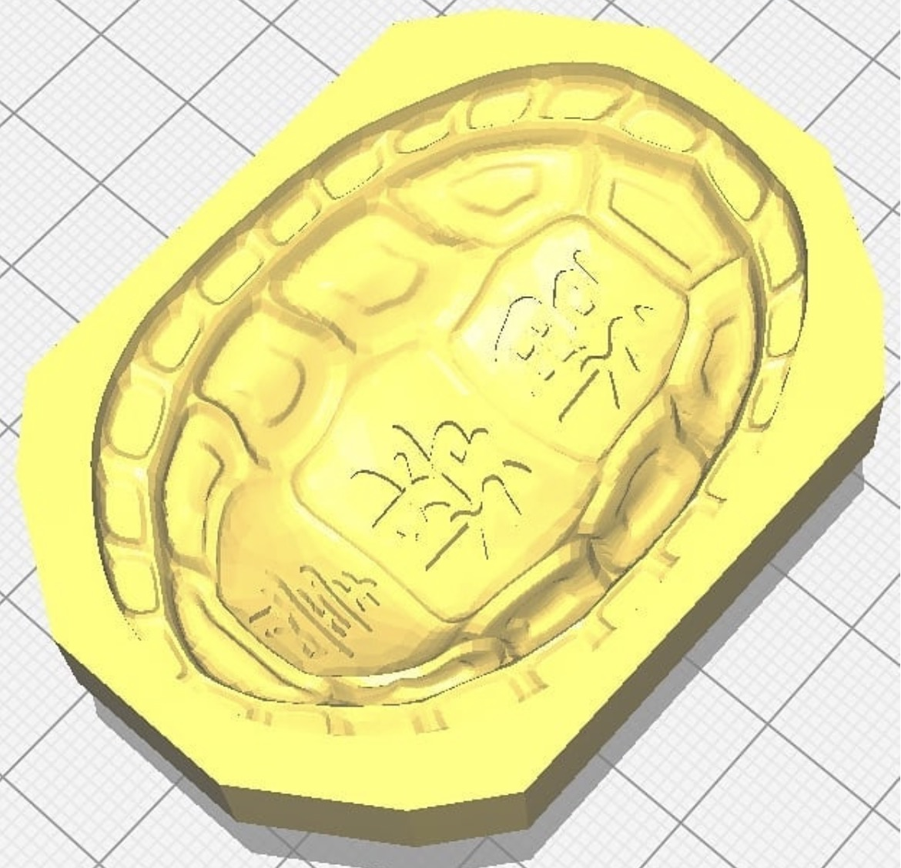
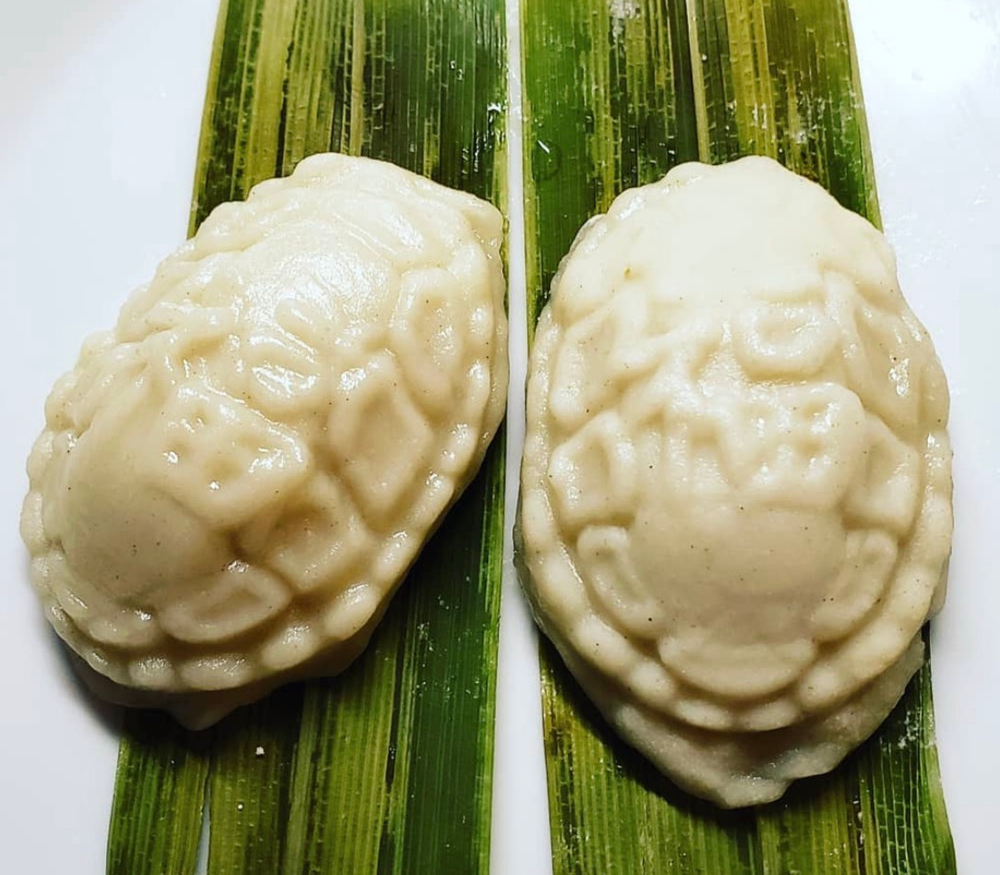

Prototyping · Exhibit Visualization
Quasar Interactive Display
Educational exhibit demonstrating the life cycle of a quasar.
Script Sections
| Exhibit ID | Element | Text | Word Count | Notes |
|---|---|---|---|---|
Overview
I modeled turtle shells with Chinese characters and printed the moulds with PLA. Since the PLA was not food-safe, I wrapped each turtle shell in saran wrap before shaping silicone putty around the PLA moulds. Once the silicone finished curing, I used tthem to shape rice cakes that were steamed afterward.
|
 |
|---|
|
 |